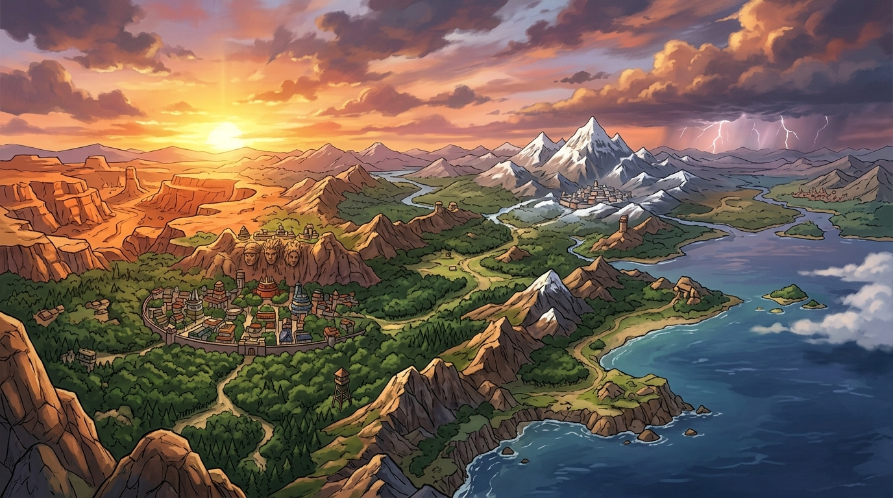

THE FIVE GREAT SHINOBI VILLAGES



The geopolitical landscape dominated by the Five Great Shinobi Nations. Each sovereign territory maintains military supremacy through its Hidden Village and elemental mastery.
Founded on the eternal Will of Fire and nestled deep within dense forests, Konoha stands as the primary bastion of the Land of Fire and birthplace of legendary Hokage leadership.
Fortified within harsh desert valleys, Sunagakure harnesses the howling winds and arid sands, commanding formidable puppet mastery and resilient Kazekage defense.
Surrounded by jagged stone mountain ranges and steep ravines, Iwagakure boasts impenetrable natural ramparts, unyielding stone discipline, and tactical Tsuchikage supremacy.
Perched high upon cloud-shrouded mountain peaks, Kumogakure channels the raw fury of lightning, famed for thunderous Taijutsu swordsmanship and decisive Raikage authority.
Enveloped by deep oceanic fog and isolated islands, Kirigakure commands the lethal arts of silent killing, water release mastery, and the legendary Seven Ninja Swordsmen.